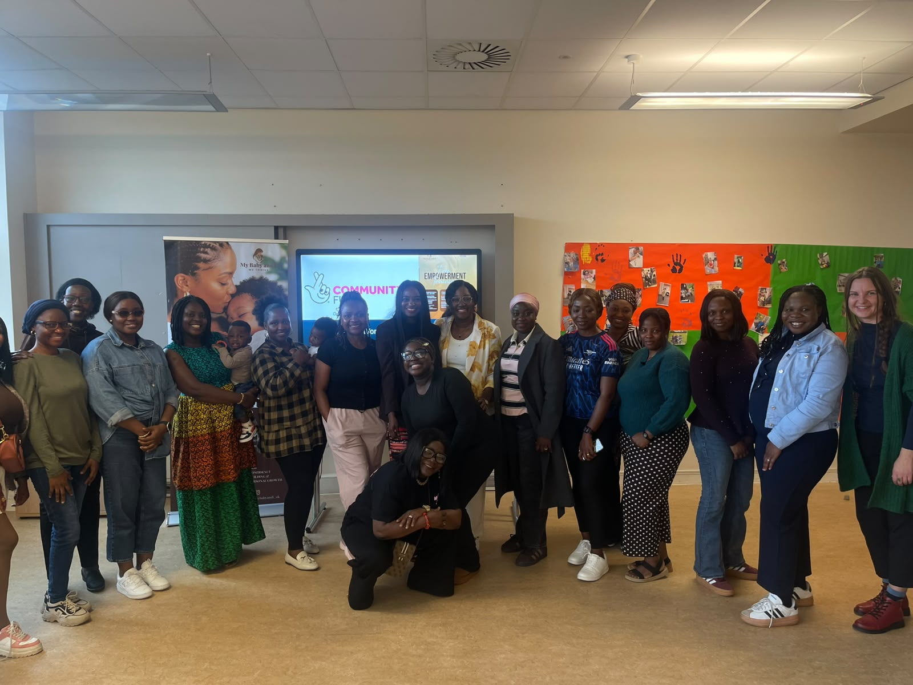
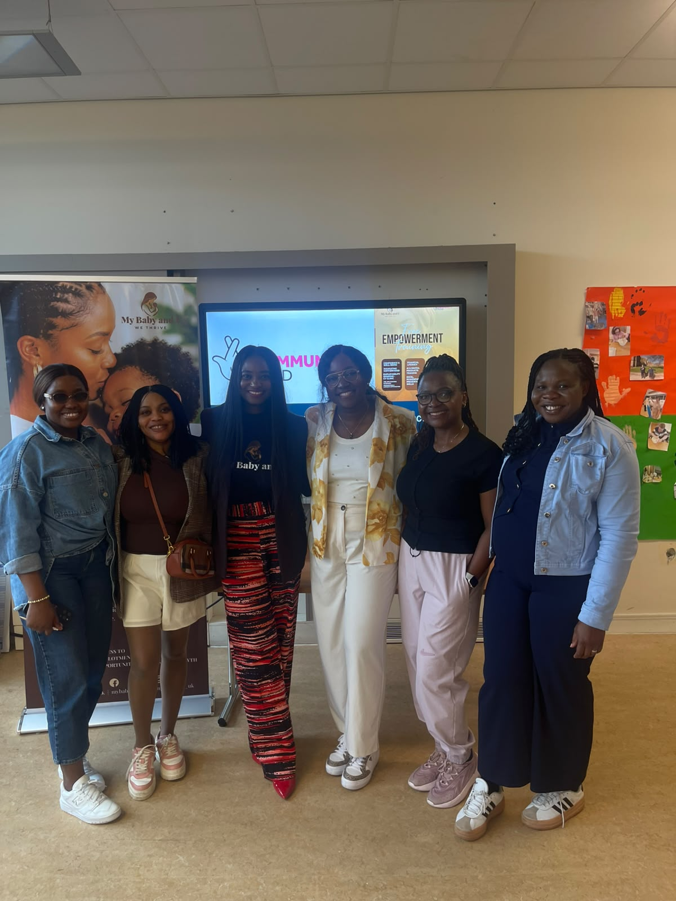
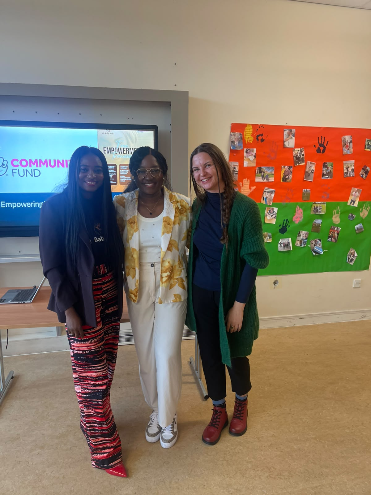

On Saturday 3 October 2026, women from across Glasgow and Renfrewshire gathered at the Wellness Suite, Lagoon Leisure Centre, Paisley for our very first Women's Empowerment Workshop. Facilitated by our founder and two inspiring guest speakers, the session created a warm and honest space for mothers to explore who they are beyond the role of "mum" — their identity, their wellbeing, and the strength they carry every day.
Free childminding was provided so that no mother had to choose between attending and caring for her children. The turnout was wonderful, and the energy in the room was something we will not forget.

The My Baby And I community gathered at the Lagoon Leisure Centre, Paisley — 3 October 2026
What we explored
The session covered identity — who are you beyond being a mother? — alongside the shared experiences of motherhood across different cultures and backgrounds. Women were given practical wellbeing tools, space for honest conversation, and the opportunity to set personal goals with the support of the community around them.
This workshop is the first in a year-long series of workshops and webinars running through to August 2027, supported by the National Lottery Community Fund and OneRen. Every session is completely free to attend.


Our founder with guest speakers and community members on the day
Why this matters
For many of the women in our community, the pressures of motherhood — combined with the experience of settling in Scotland and navigating a new culture — can leave little room for self-reflection or personal growth. This workshop gave our members dedicated time and space to reconnect with themselves, in the company of women who truly understand.
"It felt so good to just be seen as a woman, not just a mum. I left feeling stronger and more connected to this community."
— Attendee, Women's Empowerment Workshop, October 2026
Join us at the next session
This is just the beginning. We have a full calendar of free workshops and webinars ahead — on employability, wellbeing, identity and more. All sessions are completely free and designed around the real lives of the women in our community.